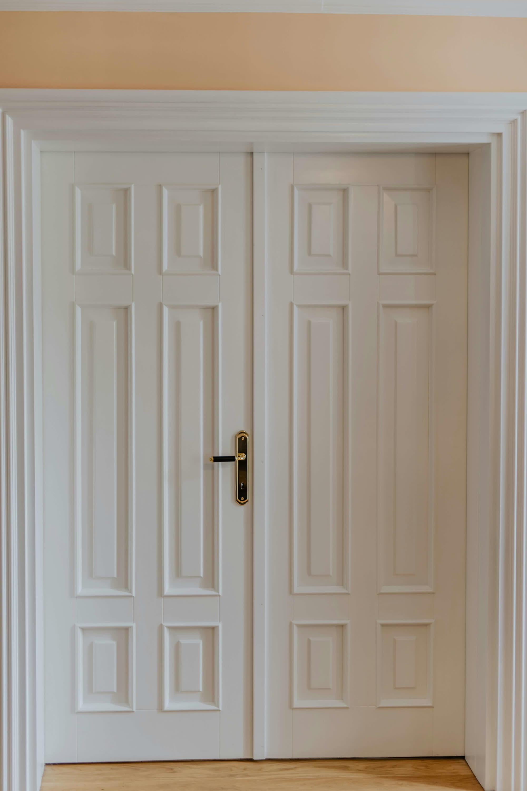
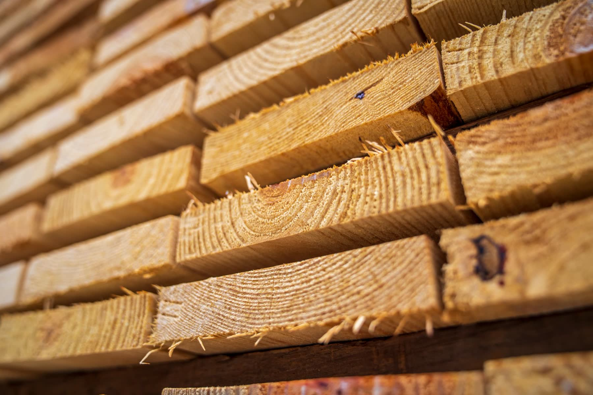
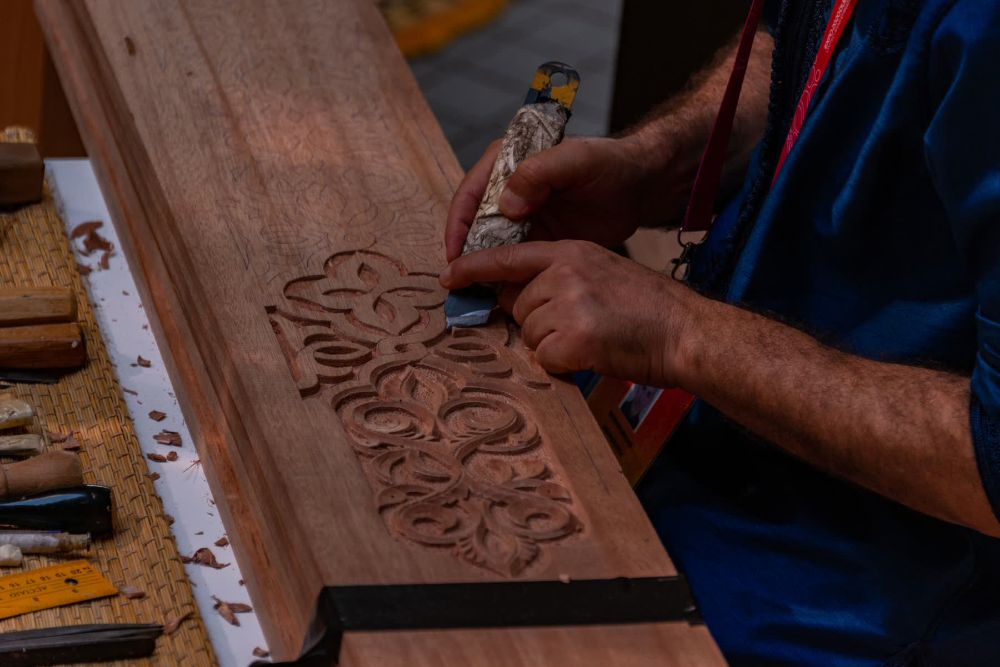
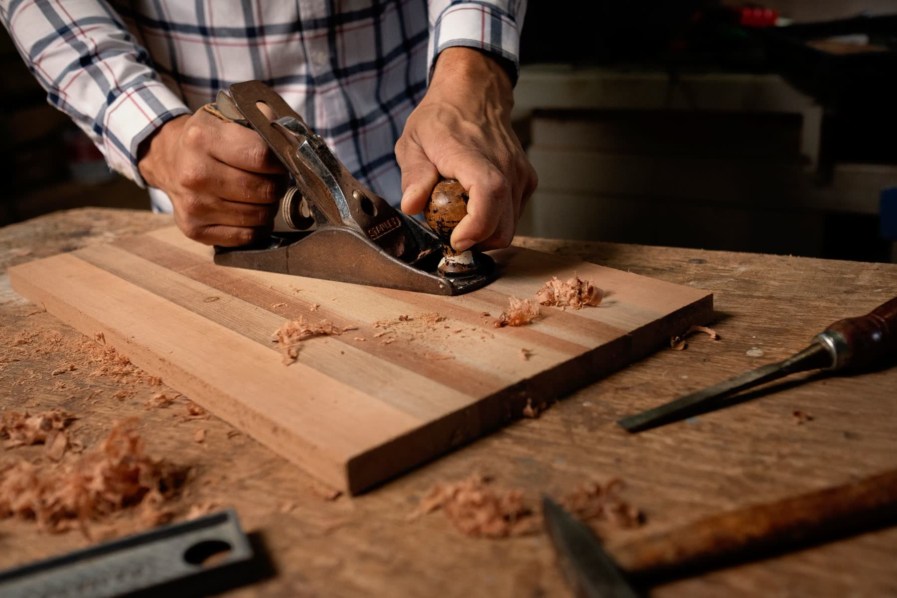

One door. Built in front of you.
Every door we make starts as rough hardwood on a bench in Brooklyn. Scroll, and watch this one come together.
The frame comes first.
Two stiles, four rails and a center mullion, milled from solid hardwood and joined with mortise-and-tenon joints. No veneers, no MDF cores.
Six raised panels, floating.
Each panel sits in a groove and floats, so the wood can move with the seasons without ever cracking the door.
Solid brass, fitted by hand.
Levers, hinges and locks are mortised and fitted on the bench, so everything closes with the sound a real door should make.
Sanded, primed, finished.
Painted, stained or left raw for your finisher. Every coat applied in our shop before the door leaves.
Built to be walked through.
Delivered hinge-ready with matching casing, for hotels, offices, builders and homes. Tell us about your project.
From your drawings to your opening
Send us a sketch, a spec sheet or a photo of the room. We send back shop drawings and samples before anything is cut.

Solid hardwood only
Stiles, rails and panels are solid wood through and through. No hollow cores, no fillers.

Any size, any profile
Standard sizes or made to measure. Interior, exterior, French, barn, fire-rated or fully custom.

Made in Brooklyn
Milled, assembled, sanded and finished in our own facility. You work directly with the maker.